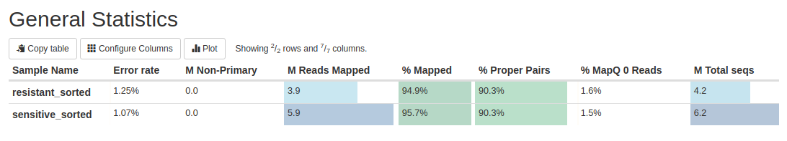

Step 1: Data Quality Control
Raw FASTQ files are evaluated with FastQC and summarized using
MultiQC. We detect GC biases, adapter contamination, duplicated reads, per-base quality
and other quality issues to ensure high reliability before alignment.
View FastQC Report
View MultiQC Report
Step 2: Trimming
Trimming is an essential step to ensure that only high-quality reads are used in the downstream analysis. During this process, we remove adapter sequences, low-quality bases, and any technical artifacts introduced during sequencing. This improves alignment accuracy and reduces
false positives in variant calling.
We use tools such as Trimmomatic or fastp, which automatically detect adapters, trim poor-quality regions, and filter out unreliable reads.
Step 3: Alignment with BWA-MEM
High-quality reads are aligned to the reference genome using BWA-MEM, one of the most
accurate and widely used algorithms for short-read mapping.
After the alignment step, mapping statistics are generated to evaluate the quality and efficiency
of the process using Samtools. These include the percentage of properly aligned reads, number of mapped and unmapped reads,
duplication rates, insert size distribution, and overall coverage of the reference genome.
To facilitate interpretation, these alignment metrics are also aggregated and visualized using MultiQC.

View MultiQC Report
Step 4: Variant Analysis Pipeline
Once the sequencing reads are aligned to the reference genome, the next phase focuses on detecting
genetic differences. This step involves preparing the aligned data, identifying variants, and filtering
those variants to ensure high confidence results.
Step 4.1: Data Preprocessing with Picard
Before performing variant calling, aligned BAM files must be standardized and cleaned. This is achieved
using Picard, a toolkit developed by the Broad Institute designed to manipulate and optimize
SAM/BAM/CRAM file formats.
Picard tools allow us to:
- Remove PCR duplicates using MarkDuplicates
- Fix read groups and metadata inconsistencies
- Sort and index BAM files for efficient processing
These preprocessing steps are crucial because duplicate reads and malformed metadata can introduce
false positive variants. By cleaning the dataset, we ensure that downstream tools such as
GATK operate on accurate, well-formatted input data.
Step 4.2: Variant Calling with GATK
Variant discovery is performed using GATK (Genome Analysis Toolkit), the gold-standard framework
for identifying SNPs and INDELs in next-generation sequencing data.
GATK provides:
- Accurate detection of single nucleotide polymorphisms (SNPs)
- Identification of insertions and deletions (INDELs)
- A probabilistic model (HaplotypeCaller) designed to distinguish true mutations from sequencing noise
GATK is widely adopted by genomic research consortia due to its reproducibility, scalability, and
sophisticated error-modeling algorithms, making it ideal for high-throughput DNA variant analysis.
Step 4.3: Variant Filtering
The raw variant file generated by GATK may still contain sequencing artifacts. To ensure reliability,
we apply filtering criteria to retain only variants passing specific thresholds, such as read depth,
genotype quality, and allele frequency.
This step reduces false positives and results in a high-confidence VCF file suitable for downstream
interpretation and biological analysis.
Step 5: Variant Annotation with SnpEff
Once high-confidence variants are obtained, they must be biologically interpreted. This is done using
SnpEff, a specialized annotation tool that predicts the functional impact of each variant
based on genomic context.
SnpEff allows us to:
- Determine whether a variant lies in a gene, exon, intron, UTR, or intergenic region
- Infer the consequence of nucleotide changes (missense, synonymous, frameshift, stop gained, etc.)
- Prioritize variants with potential phenotypic relevance
At the end of this step, the VCF file becomes a biologically meaningful dataset, enabling hypotheses
about gene function, phenotype association, and evolutionary relevance.
Step 6: Coverage Analysis & IGV Visualization
Sequencing coverage provides insight into how uniformly the genome has been sequenced. Insufficient or
uneven coverage can lead to missing variants or false positives.
We generate coverage plots to assess read depth across the genome and verify the quality of sequencing.
Finally, we visualize both coverage and annotated variants using IGV (Integrative Genomics Viewer),
an interactive genome browser that allows manual inspection of genomic loci, read alignments, and variant
positions.
This visual confirmation step is essential for validating complex variants and ensuring that the computational
predictions align with the raw sequencing evidence.